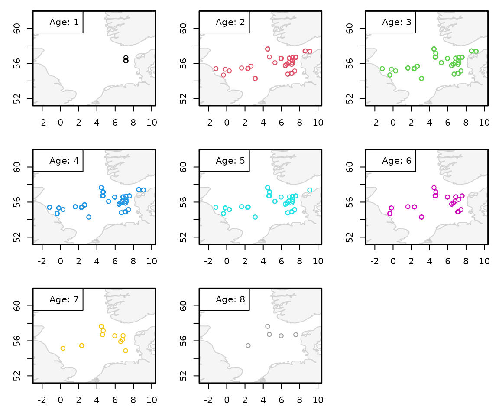

Extracting Length-at-Age (LAA) from DATRAS
Source:vignettes/articles/exploring-length-at-age.Rmd
exploring-length-at-age.RmdThis vignette demonstrates how to extract and explore length-at-age
(LAA) data from a cleaned DATRAS object and how to estimate
stochastic age-length keys (ALKs) using
DATRASextra.
Length-at-age information is useful in its own right, for example for
exploring temporal, spatial, or seasonal patterns in growth and
population structure. However, it is also central to many
stock-assessment workflows because the individual biological
observations in CA are typically not
catch-representative on their own. In contrast, the HL
table contains the representative catch-at-length information. ALKs are
therefore used to convert representative catch-at-length data into
representative catch-at-age estimates.
In other words:
-
HLtells us how many fish were caught at each length, -
CAtells us how age relates to length for the aged fish, - ALKs combine both sources of information to infer catch at age.
Outline
- Load DATRASextra
- Select years and clean the data
- Explore length-at-age data
- Estimate age-length keys (ALKs)
- Predict catch at age from the fitted ALK
- Summary
Load DATRASextra
Load the package with:
A typical DATRAS object is a list with three core
components. We use the example data set dab included in
DATRASextra to demonstrate the workflow:
str(dab, max.level = 1)
#> Class 'DATRASraw' hidden list of 3
#> $ CA:'data.frame': 8034 obs. of 39 variables:
#> $ HH:'data.frame': 2651 obs. of 76 variables:
#> $ HL:'data.frame': 26737 obs. of 36 variables:The three main tables are:
-
CA: individual-level biological data, such as length, weight, sex, maturity, and age -
HH: haul- or station-level metadata, such as position, time, gear, and environmental information -
HL: catch-at-length and subsampling information
When a species appears in CA, a corresponding record
should also exist in HL, even if some values are missing or
represented by special codes such as -9.
Select years and clean the data
In many applications, it is useful to restrict the data to a selected time period before exploring LAA patterns or fitting an ALK. Here, we focus on the years 2020 to 2024:
years <- 2020:2024We then apply a standard cleaning step with
clean_datras():
dab <- clean_datras(dab, years = years)This function applies a number of common filters and harmonisation steps. The exact defaults may depend on the package version and settings, but the general aim is to create a cleaner, more analysis-ready data set.
Equivalent manual filtering would look like this:
Using clean_datras() is generally more convenient and
helps keep workflows consistent and reproducible.
Explore length-at-age data
We start by extracting the CA table:
ca <- dab[["CA"]]
## Structure of CA data
str(ca, max.level = 1)
#> 'data.frame': 8034 obs. of 39 variables:
#> $ RecordType : Factor w/ 1 level "CA": 1 1 1 1 1 1 1 1 1 1 ...
#> $ Survey : Factor w/ 1 level "NS-IBTS": 1 1 1 1 1 1 1 1 1 1 ...
#> $ Quarter : Factor w/ 2 levels "1","3": 1 1 1 1 1 1 1 1 1 1 ...
#> $ Country : Factor w/ 4 levels "DK","GB","GB-SCT",..: 4 4 4 4 4 4 4 4 4 4 ...
#> $ Ship : Factor w/ 5 levels "26D4","58G2",..: 2 2 2 2 2 2 2 2 2 2 ...
#> $ Gear : Factor w/ 1 level "GOV": 1 1 1 1 1 1 1 1 1 1 ...
#> $ SweepLngt : int 110 110 110 110 110 110 110 110 110 110 ...
#> $ GearEx : Factor w/ 3 levels "B","S","D": 2 2 2 2 2 2 2 2 2 2 ...
#> $ DoorType : Factor w/ 1 level "P": 1 1 1 1 1 1 1 1 1 1 ...
#> $ StNo : chr "60052" "60052" "60052" "60052" ...
#> $ HaulNo : int 52 52 52 52 52 52 52 52 52 52 ...
#> $ Year : Factor w/ 4 levels "2020","2021",..: 1 1 1 1 1 1 1 1 1 1 ...
#> $ SpecCodeType : chr "W" "W" "W" "W" ...
#> $ SpecCode : int 127139 127139 127139 127139 127139 127139 127139 127139 127139 127139 ...
#> $ AreaType : int 0 0 0 0 0 0 0 0 0 0 ...
#> $ AreaCode : Factor w/ 104 levels "34F2","34F4",..: 71 71 71 71 71 71 71 71 71 71 ...
#> $ LngtCode : Factor w/ 3 levels ".","0","1": 3 3 3 3 3 3 3 3 3 3 ...
#> $ LngtClas : int 12 13 14 14 14 14 15 15 15 15 ...
#> $ Sex : Factor w/ 3 levels "","F","M": 1 1 1 1 1 1 1 1 1 1 ...
#> $ Maturity : chr NA NA NA NA ...
#> $ PlusGr : Factor w/ 1 level "": 1 1 1 1 1 1 1 1 1 1 ...
#> $ Age : int NA NA NA NA NA NA NA NA NA NA ...
#> $ NoAtALK : int 1 1 1 1 1 1 1 1 1 1 ...
#> $ IndWgt : num NA NA NA NA NA NA NA NA NA NA ...
#> $ FishID : int 40 72 100 19 47 57 24 41 83 90 ...
#> $ GenSamp : Factor w/ 2 levels "","N": 2 2 2 2 2 2 2 2 2 2 ...
#> $ StomSamp : Factor w/ 2 levels "","N": 2 2 2 2 2 2 2 2 2 2 ...
#> $ AgeSource : Factor w/ 1 level "": 1 1 1 1 1 1 1 1 1 1 ...
#> $ AgePrepMet : Factor w/ 1 level "": 1 1 1 1 1 1 1 1 1 1 ...
#> $ OtGrading : int NA NA NA NA NA NA NA NA NA NA ...
#> $ ParSamp : Factor w/ 2 levels "","N": 2 2 2 2 2 2 2 2 2 2 ...
#> $ MaturityScale : Factor w/ 3 levels "","M6","SMSF": 2 2 2 2 2 2 2 2 2 2 ...
#> $ Valid_Aphia : num 127139 127139 127139 127139 127139 ...
#> $ DateofCalculation: int 20220125 20220125 20220125 20220125 20220125 20220125 20220125 20220125 20220125 20220125 ...
#> $ StatRec : Factor w/ 104 levels "34F2","34F4",..: 71 71 71 71 71 71 71 71 71 71 ...
#> $ LngtCm : num 12 13 14 14 14 14 15 15 15 15 ...
#> $ Species : Factor w/ 1 level "Limanda limanda": 1 1 1 1 1 1 1 1 1 1 ...
#> $ haul.id : Factor w/ 2651 levels "NS-IBTS:2020:1:DE:26D4:GOV:104:25",..: 298 298 298 298 298 298 298 298 298 298 ...
#> $ Rank : chr "species" "species" "species" "species" ...The CA component contains the individual-level
biological observations, including age where available. This is the main
source of information for estimating age-length relationships.
Sample size by year
A first useful check is to inspect how much data are available by year:
## Number of individual rows per year
xtabs(~ Year, ca)
#> Year
#> 2020 2021 2022 2023
#> 2911 2757 1595 771
## Number of unique hauls per year
xtabs(~ Year, data = unique(ca[c("Year", "haul.id")]))
#> Year
#> 2020 2021 2022 2023
#> 118 123 110 94This gives a quick impression of the temporal distribution of the biological sampling effort. Strong imbalances among years can matter when interpreting temporal patterns or when fitting more flexible ALK models.
Add spatial information from HH
Some useful variables, such as haul position, are stored in
HH rather than CA. To explore the spatial
distribution of aged fish, we merge this information onto the
CA table using haul.id:
ca <- merge(
ca,
dab[["HH"]][c("haul.id", "lon", "lat")],
by = "haul.id",
all.x = TRUE,
sort = FALSE,
suffixes = c("", ".HH")
)We can now inspect where age observations were collected. The following plot shows the haul locations of fish assigned to different ages:
ages <- sort(unique(ca$Age))
ages <- ages[!is.na(ages)]
xlim <- range(ca$lon, na.rm = TRUE)
ylim <- range(ca$lat, na.rm = TRUE)
par(mfrow = n2mfrow(length(ages)),
mar = c(3, 3, 1, 1))
for (i in seq_along(ages)) {
plot(ca$lon[ca$Age == ages[i]],
ca$lat[ca$Age == ages[i]],
col = i,
xlim = xlim,
ylim = ylim,
xlab = "", ylab = "")
plot(sf::st_geometry(DATRASextra:::get_land()), add = TRUE,
col = grDevices::adjustcolor(grey(0.9), 0.4),
border = grDevices::adjustcolor(grey(0.6), 0.4))
legend("topleft", legend = paste0("Age: ", ages[i]),
pch = NA, bg = "white")
box(lwd = 1.5)
}
This type of plot can be helpful for spotting strong spatial clustering of age samples. Such patterns may suggest that age data are concentrated in specific areas, which can motivate the use of spatial terms in the ALK model.
Age availability
The next step is to check how many observations actually have age information:
table(ca$Age, useNA = "ifany")
#>
#> 1 2 3 4 5 6 7 8 <NA>
#> 4 72 99 138 104 47 15 5 7550Around 94% of CA entries have missing age.
This is expected in many DATRAS data sets: not every measured fish is aged. That is precisely why ALKs are needed.
For ALK estimation, the variable NoAtALK is used as the
frequency or count associated with each age-length observation.
Depending on the survey and data structure, one row in CA
may therefore represent one or multiple fish in the age-length
sample.
Explore the age-length relationship directly
Before fitting a model, it is often useful to visualise the observed age-length relationship:
This quick plot can reveal whether age tends to increase smoothly with length, whether there is substantial overlap among ages, and whether outliers or unusual records may require further checking.
A year-specific view can also be informative:
par(mfrow = n2mfrow(length(unique(ca$Year))),
mar = c(3, 3, 2, 1))
for (yr in sort(unique(ca$Year))) {
if (any(!is.na(ca$Age[ca$Year == yr]))) {
plot(ca$LngtCm[ca$Year == yr],
ca$Age[ca$Year == yr],
pch = 16, cex = 0.6,
xlab = "", ylab = "",
main = yr)
box(lwd = 1.5)
}
}
mtext("Length [cm]", side = 1, outer = TRUE)
mtext("Age", side = 2, outer = TRUE)If the relationship changes substantially among years, a model with year effects may be preferable. As the dab example shows, for some years, age information might not be available (here: 2020 and 2022).
Estimate age-length keys (ALKs)
To predict catch at age, we first need representative catch-at-length
information from HL. We therefore add the numbers-at-length
matrix to the object:
dab <- add_numbers_at_length(dab)For stock-assessment applications, ALKs are often estimated separately by quarter. As a simple example, we restrict the data to quarter 1:
dab_Q1 <- subset(dab, Quarter == 1)We can now fit a basic stochastic ALK:
ALK <- fitALK(
dab_Q1,
minAge = 3,
maxAge = 8
)This model estimates the age composition across the specified age
range and links age to length using the aged fish in
CA.
A more flexible model can include additional structure, for example random year effects or spatial smooths:
ALK_spatial <- fitALK(
dab_Q1,
minAge = 2,
maxAge = 8,
model = "cra ~ LngtCm + s(Year, bs = 're') + s(lon, lat, bs = 'ts')"
)Such extensions can be useful when the age-length relationship varies over time or space, or when sampling is spatially structured.
How the stochastic ALK is formulated
fitALK() uses a continuation-ratio formulation. For each
age threshold a, the data are restricted to fish with
Age >= a, and a binary model is fitted for whether
Age > a. In other words, for each threshold it
estimates
\[ P(\mathrm{Age} > a \mid \mathrm{Age} \ge a,\; x) \]
where x denotes the covariates, such as length, year, or
location.
The full ALK is then constructed by combining these conditional probabilities across ages. This formulation has two practical advantages:
- it guarantees that predicted probabilities across age classes sum to one, and
- it allows flexible modelling of covariate effects on the age distribution.
Predict catch at age from the fitted ALK
Once the ALK has been fitted, it can be used to convert numbers at length into numbers at age. Prediction is currently done using the corresponding prediction method from the DATRAS package:
dab_Q1$Nage <- predict(ALK)This adds a new matrix to the HH component with the
predicted numbers by age:
head(dab_Q1$Nage)
#> 3 4 5 6 7 8+
#> [1,] 42.319884 64.1632166 46.8023136 22.81739329 7.440942296 2.456249953
#> [2,] 61.598467 48.2323893 29.6834661 12.89028120 3.471816098 1.123580681
#> [3,] 181.618371 146.4905106 75.0238389 27.46295412 4.255536098 1.148789129
#> [4,] 41.184964 44.5331180 28.9971735 13.06082336 3.913259324 1.310661305
#> [5,] 188.141721 203.2544627 101.3182744 34.30964641 3.989097706 0.986797851
#> [6,] 0.261138 0.4080437 0.2343069 0.08575212 0.008794538 0.001964819Each row corresponds to a haul, and each column corresponds to an age
class. The values are derived by combining the representative numbers at
length from HL with the estimated probabilities from the
ALK.
These haul-level age compositions can then be used for a range of downstream analyses. For example, they can be aggregated to produce age-based survey indices, compared among years or areas, or used as input to stock-assessment models.
Quick inspection of predicted catch at age
A simple first check is to look at the total predicted numbers by age across all hauls:
colSums(dab_Q1$Nage, na.rm = TRUE)
#> 3 4 5 6 7 8+
#> 150478.338 115774.099 55497.529 19510.320 3490.392 1050.322This gives the overall predicted age composition for the selected
subset of the survey. If desired, age-specific maps or time-series
summaries can be derived in exactly the same way as for other haul-level
quantities stored in HH.
Summary
Length-at-age data provide the link between size-based survey
observations and age-based population dynamics, and are therefore
central to many fisheries applications. Within the broader
DATRASextra workflow, this vignette builds on the data
access, cleaning, and length-based summaries introduced in the earlier
vignettes, and extends them toward age-structured analyses. In
particular, stochastic age-length keys make it possible to combine the
catch-representative length information in HL with the aged
subsample in CA, thereby deriving age-based summaries that
are suitable for stock assessment, survey standardisation, and analyses
of temporal or spatial population structure.
At the same time, the resulting age compositions are only as reliable as the underlying age data and the assumptions of the ALK model. Age samples may be sparse, unevenly distributed in space or time, or unrepresentative of the full length range, and the age-length relationship itself may vary among years, areas, or survey strata. For this reason, ALKs should not be treated as a purely technical conversion step, but as a statistical model whose assumptions and predictive behaviour deserve careful checking. In practice, this often means comparing alternative model formulations, examining residual patterns, and considering whether additional covariates such as year, quarter, sex, or space should be included.
This vignette therefore provides a starting point rather than an endpoint. Once age-based haul summaries have been derived, they can be aggregated into survey indices, used to study shifts in recruitment or age structure, or linked with the other DATRASextra tools for biomass, length composition, and spatial analyses. A natural next step is to compare age-based and length-based views of the survey data, evaluate the stability of ALKs over time, and assess how the choice of ALK model influences downstream scientific conclusions and fisheries advice.